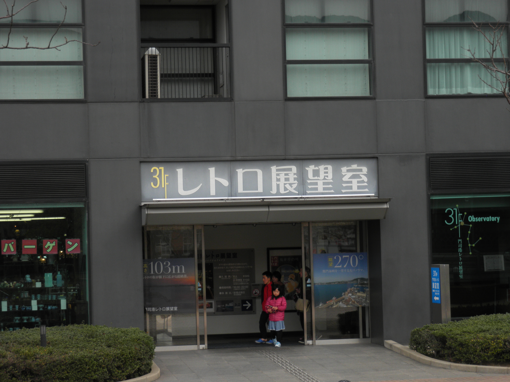
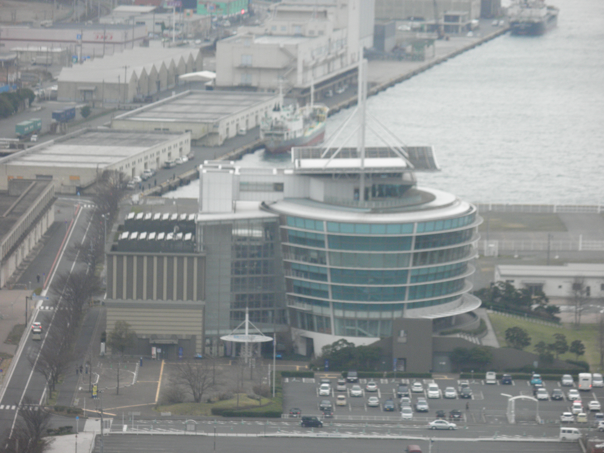

レトロ展望室
門司港レトロ展望室の建物です。 手前は国際友好記念図書館との事でした。
レトロ展望室の出入り口です。 103メートルの高さから270度の景色を一望できるので人気があります。 
レトロ展望室正面側の全景です。
私は、門司港レトロに来たら必ずこちらからの景色を眺めます。 一人で門司港レトロに来ることもありますが、一人のんびり景色を眺めるのも気持ち良いですよ。 気分転換にも最適な場所だと思います。
展望室からの景色
レトロ展望室から見える関門橋です。
下関側の海峡ゆめタワーです。 高さは、レトロ展望室とほとんど変わらないと聞いたことがあります。
関門海峡ミュージアム（海峡ドラマシップ）です。 こちらでは昭和時代のの風景が楽しめます。 
門司港ホテルです。
大昔、佐々木小次郎と宮本武蔵が決闘したといわれる巌流島です。 巌流島への観光船も出ています。